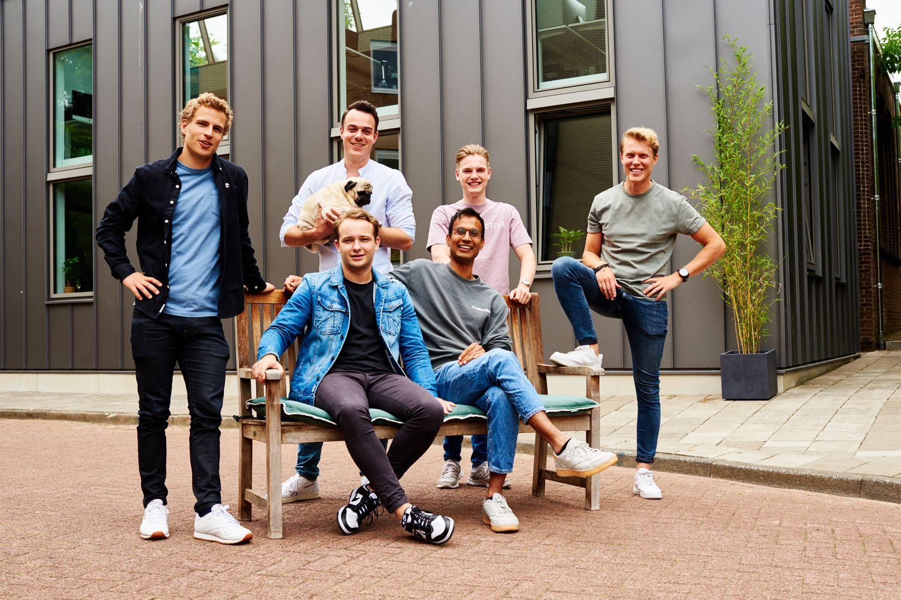

- Nieuw!
Front-end Developer (medior)
Onze agency is op zoek naar een medior front-end developer die ons joint bij onze missie: zoveel mogelijk mensen verbinden met digitale oplossingen.
Wij zijn altijd op zoek naar design- en development talent. Ben jij dat? Wij leren je graag kennen.
Onderstaand zie je onze actuele vacatures. Staat hier voor jou geen passende functie tussen, maar denk je wel een aanvulling voor ons team te zijn? Voor een open sollicitatie mail dan info@avocado-media.nl
Onze agency is op zoek naar een medior front-end developer die ons joint bij onze missie: zoveel mogelijk mensen verbinden met digitale oplossingen.